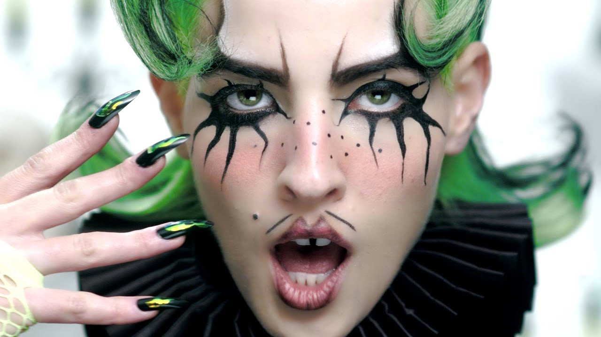

The Mustache

One of Electra's most iconic fashion choices and a staple of their brand identity is the usage of a thin, two-line eyeliner-drawn mustache. Having featured it in several music videos as well as in various concerts, it serves as a reminder of the gender roles Electra commonly discusses in their music and how they play around with it. Through Electra's performance in drag in several of their concerts, music videos, and photoshoots, they've aimed to address certain topics, such as...
- Defying Gender Roles: Electra has constantly played the role of an overexaggerated masculine archetype. They've dressed as a business executive, a knight from medieval times, a boxer, and hyper-patriotic American figures. These roles are always characterized in a way to attempt to expose the strange quality of strict gender roles present due to society and its expectations.
- Satire: Several of Electra's costumes are designed in a way to poke fun at what they're representing: they've dressed in Autumn fashion with a pumpkin spice latte in hand, or in a fedora with a suit, all whilst still having their drawn-on mustache alongside their outfit.
Music Videos
Despite being a smaller musical artist, Electra ensures to have excellent quality in their music videos. With an entire production team behind them for most videos, they use cinematic shots and create visual stories to be pieced together with their songs.
Costuming
Every album era of theirs features entirely different wardrobes, and the many music videos of theirs makes this entirely clear. Whilst Flamboyant saw a casual masculine theme, with a blue/purple colour palette, My Agenda saw a switch to medieval accessories, fedoras, and black suits. Fanfare leaned into a theme of royalty, with grand red/orange outfits designed to mimic a rich monarch. Dorian Electra aimed to have a more humble fashion sense, with their outfits becoming much more casual and inspired by British culture.
Direction
Electra has worked with several different directors to ensure the output of a high-quality music video. Choreography is also present in several music videos, as well as the usage of CGI, 2D animation, and specific lighting to ensure the best viewing experience possible.
Want to see more? Visit the Home Page or visit the Discography & Eras.